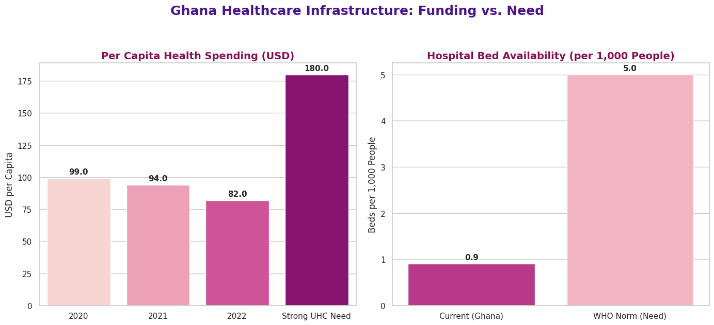
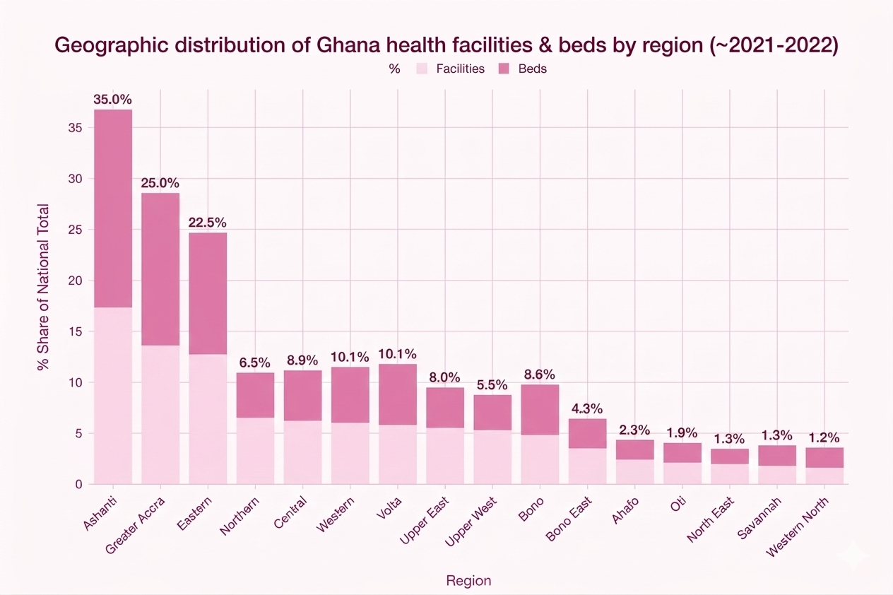

Structural issues in healthcare systems form the foundation of No Bed Syndrome. These systemic
failures include inadequate funding for healthcare infrastructure, poor resource allocation,
fragmented care coordination, and outdated tools. When these foundational problems are left
unaddressed, they create the conditions where hospitals routinely operate beyond capacity. This
means emergency
patients are redirected from facility to facility, and critical care becomes dependent on
availability rather than medical urgency. In this environment, "no bed" becomes
a predictable outcome of Ghana's healthcare system.
Oral accounts from people I spoke with in Ghana further illustrated how normalized this
reality has
become. Some described calling hospitals ahead of time to confirm whether a bed was available before
even attempting to seek care. Others explained that families sometimes reach out to someone with
social capital, such as a minister or well connected official, in hopes that their intervention
might secure a bed for a loved one. These strategies reveal how access to care can become entangled
with networks of influence rather than medical urgency alone. In this sense, No Bed Syndrome also
exposes the politics of mourning and recognition. It raises questions about whose lives are treated
as urgent, whose suffering is acknowledged, and who is able to access treatment in moments when time
and care mean the difference between life and death.
Graph 1: Infrastructure Investment Gap

Comparison of healthcare infrastructure funding against population growth and
demand projections over the past two decades.
Source: GHANA
Report
Graph 2: Resource Distribution Analysis

Mapping of healthcare resource distribution showing urban-rural disparities and
geographic inequalities.
Source: UN
Report
Understanding Systematic Failures
The data in these graphs helps illustrate the structural conditions that produce "No Bed Syndrome" in Ghana. The first graph shows that per capita health spending has remained relatively low, hovering around $82 to $99 between 2020 and 2022, while estimates for strong universal health coverage needs are far higher. At the same time, hospital bed availability sits at roughly 0.9 beds per 1,000 people, far below the benchmark set by the World Health Organization of about 5 beds per 1,000 people. This gap highlights how demand for care significantly outpaces available infrastructure. The second graph further demonstrates how limited resources are unevenly distributed across regions, with places like the Greater Accra Region and Ashanti Region holding a disproportionate share of facilities and beds compared to more rural regions. Together, these patterns help explain why patients are often redirected from hospital to hospital. When both the overall supply of beds is limited and their distribution is uneven, overcrowding and refusals of care become normalized, producing the conditions that create and sustain No Bed Syndrome.